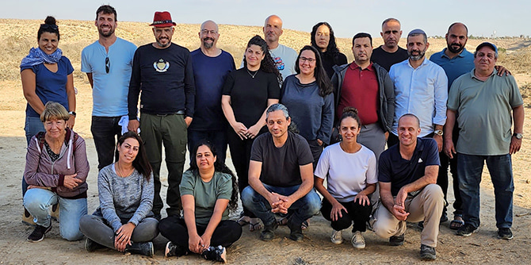

17 העמיתות והעמיתים מאיישים תוכנית שהתקשינו למצוא לה שם חיבה: התלבטנו בין דונ"ם (דימונה ונגב מזרחי), מנע"ד (מזרח נגב, ערד, דימונה) ונגמ"ז (נגב מזרחי).
כבר במפגשה השלישי יצאה הקבוצה לריטריט למידה בן יומיים בחאן בארותיים שעל גבול מצרים. במקום יפהפה ומנותק מקליטה סלולרית עסקו העמיתים בחקר ההשראה ומקורותיה, ויודגש: כוונתנו ליכולתנו להתפעל ולשאוב השראה מן הזולת. החוויה האינטנסיבית בריטריט תרמה להיווצרות רוח קבוצה איתנה כבר בשלב מוקדם של התוכנית.
כמתוכנן, הקבוצה מתמקדת – בחלק הראשון של שנתה הראשונה – בחקר ערכים ומשמעותם, לצד עיון מעמיק ברציונליות, בהטיות שיפוט ובאינטואיציות. ואולם, ברוח הפדגוגיה הנגבית הייחודית, דגש רב מושם על המרחב הבינאישי ועל התוודעות העמיתים למישורים הגלויים פחות והמודעים פחות של התנהלותם כבני אדם וכמנהיגים.
שני מרכיבים מייחדים את תוכנית נגמ"ז: האחד, "סחב"י" – סדרת חיבורי יסוד שבה מציגים כל עמית ועמיתה, לחוד כמובן, את מישור פעילות המנהיגות המייחד אותם. התמקדות זו בקונקרטי ובמעשי לא זו בלבד שאינה באה על חשבון ההעמקה בהגות ובמרכיבי זהות אלא להפך: היא מחזקת אותה ונותנת לה פשר ממשי. המרכיב השני המייחד את התוכנית הוא מסע הלמידה האישי שכל אחת מן העמיתים נדרש לנהל, לצד העיסוק בתכנים המשותפים. בתום כל מפגש כותבים העמיתים את מחשבותיהם, רשמיהם ותחושותיהם במחברת אישית שהוכנה לצורך מטרה זו עצמה. לא זו בלבד: הם נדרשים בתום כל פרק למידה לערוך התבוננות רפלקטיבית ולתקף התבוננות זו במרכיב מתוך "מרחב היצירה האישי" (פעילות מונחית התבוננות הנעזרת בצילום, ציור, פיסול ורישום). מרחב זה מהווה, חרף ואולי בשל היסוד הבלתי קוגניטיבי הגלום בו, נדבך נוסף באותו מסע מיוחל אל המנהיגות.
אנו מצפים לשנתיים מלאות עניין, חדוות למידה ועשייה שבמהלכן, ולאחריהן, יובילו 17 המנהיגים והמנהיגות תהליכים לקידום החברה הישראלית, בראש ובראשונה בנגב המזרחי. הרוח המנדלית תנשב בתוכם ובגבם בכל עת.
{kind=link}